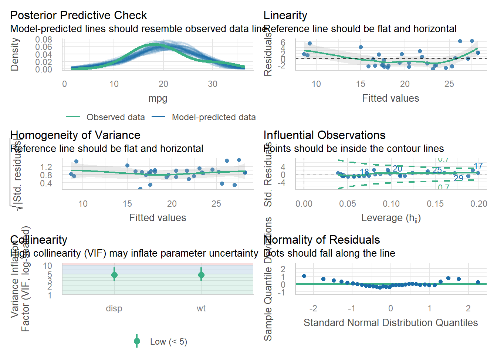

m1 <- lm(mpg ~ disp + wt, data = mtcars)
check_model(m1)
431 Staff
2025-10-27
I wanted to pass along these tips, most of which have came up in assessing the last few years of similar projects.
knitr::opts_chunk$set(comment = NA)theme_bw() or theme_lucid() or another of your choosing globally, rather than including it in the code of every individual plot you build. So include something liketheme_set(theme_bw())immediately after you load the tidyverse, and then don’t include theming of this sort in your individual plots, unless you are deliberately adding some specialized theming elements for a specific plot.
Check your HTML for plot-text transition problems. One of the hardest things to get people to do is add empty lines in R Markdown after they create a plot or heading. Forgetting to do this can cause your plots to show up in the HTML with the start of the next paragraph shown to the right of the plot instead of below the plot. Make sure you avoid this mistake. Also, Hit ENTER after every pipe and + in your code so that you avoid scrollable windows for code in your HTML output.
Missing Data Mechanism and Dealing with Missingness. You need to have an explicit statement about your assumed missing data mechanism, including either the term MCAR, MAR or MNAR, in both Study 1 and Study 2, and you have to be specific about what you’ve done. This should be part of your HTML file everywhere where you impute (as in Study 2 variables other than your outcome and key predictor) or filter to complete cases (as in Study 1 and with your Study 2 outcome and key predictor). None of your analyses (in Study 1 or Study 2) should involve missing values: either you should have imputed missing values or you should have filtered to complete cases.
Spell check doesn’t check headings and subheadings. Using spell check in R Studio is trivial (just hit F7) and important, but be aware that you still need to read your HTML to be sure that you don’t have problems. A particular issue is that the spell check doesn’t check your headings and subheadings so you’ll want to pay especially close attention to those pieces. In particular, I’ve seen several people misspell the word “Transformations” in section 6 of Study 2.
Your confidence level is 90%, not 95%. All of Project B uses a 90% confidence level, so the phrase “p < 0.05” is 100% irrelevant to this work. I would also strongly suggest you search through your work and eliminate the terms “statistical significance” and even “significant” unless you have a remarkably good reason to include them.
Order multi-categorical factors properly. Please respect the ordering of multicategorical variables, especially in Analyses C and E for Study 1. Be sure that you adjust the levels of your factor so that they use the natural order of the variable. If you have a nominal multi-categorical variable, like race/ethnicity, in Study 2, then I suggest you order the levels of that factor variable from largest to smallest in terms of number of subjects, so that the baseline group will be the one that appears most frequently in your data.
Don’t change numeric variables to factors. If you change a numeric variable to a factor, and then change it back into a numeric variable, that will create many, many problems. Don’t do that. Instead, create a new factor variable if you’re going to convert a numeric variable into categories.
NHANES isn’t a random sample. Don’t suggest or state that it is. So the NHANES sampling procedure is a limitation in terms of you cannot really generalize to the US population with NHANES unless you use survey weighting.
Specify your approach if not standard. If you’re using NHANES data but not using adults ages 21-79, be sure that you’ve made that abundantly clear everywhere where it’s relevant, including at least in the Data Description section for Study 1 and Study 2. Also, be sure to very clearly specify whether you’re using 2017-2020 or 2021-2023 NHANES data.
Study 1 Analyses must stand on their own. Each of your four Study 1 Analyses should stand on its own, in the sense that you should specify the relevant group of subjects, the exposure and the outcome in words at the start of each of those analyses. Please label these as Analysis A, B, C, D or E, (leaving out one, of course) as I did in building the assignment.
Describe the direction and size of estimated effects. In Project B, you should have no statements about statistical significance or any synonym. Estimate effects whenever possible, including a confidence interval. This is easy for Study 2 and for Study 1 Analyses A, B, and D, I think, but more challenging for C and E. Be sure to carefully focus your description of your result on the direction and size of the effect you estimate, in the context of your problem.
Paired vs. Independent Samples. In Analyses A and B for Study 1, be sure that you provide a logical argument near the top of your work for why the data you are studying use (in Analysis A, paired) (in Analysis B, independent) samples.
Simplifying Conclusions in Analysis D. In Analysis D of Study 1, in writing up your conclusions after forming an appropriate 2x2 table, and specifying the probabilities of obtaining your outcome within each exposure group as estimated at the top of the table, it is completely sufficient to provide your interpretation of either:
check_model() or something else, make them tall, by incorporating r, fig.height = 8 into your chunk header for that code. For example, this is the default size:and below is what you get if you add #| fig.height: 8 at the start of the code chunk.
This helps us see things more effectively, especially with large sample sizes in the plots. So please do it.
Box-Cox. In Study 2, in the Transformation of Outcome section, please show the Box-Cox analysis immediately after the starting graphical summary (as opposed to the strange approach I used in the template) and then either use it (which is fine) or specify why you’ve decided not to use it. Remember that a Box-Cox \(\lambda\) near 0 suggests a logarithmic transformation, and that a Box-Cox \(\lambda\) of 1 indicates no transformation.
Using Validated R-Square. In Study 2, you should use the validated R-square you develop in section 10.3.2 as part of your discussion in both Sections 10.4 and 11.1. (in addition to whatever else you decide to use) to help describe how successful your winning model is. You should also reflect in Section 11.1 (Chosen Model, within the Discussion section) on the relationship between the original training sample R-square you observed for your chosen model and the validated R-square you calculated for that model in section 10.3.2. Here, you want to assess how overconfident or underconfident your original R-square was, basically.
Don’t forget to submit:
Thanks and good luck to you all!